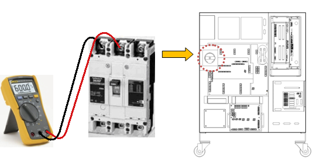
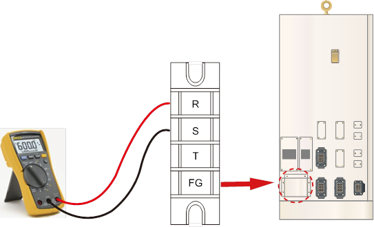

(1) Please check the voltage on the rating plate and the actual input voltage.
Please check if the voltage of controller's power supply is within the allowed voltage range as described on the rating plate. Allowed range of input voltage is within the 10% of describe value on the rating plate, and it should be over 198V (AC220V standard). Below describes how to measure the input voltage of controller. If the measured voltage is out of the allowed range, please examine the power supply units.
n Hi5a-S Controller: Measuring the power line of front switch

Figure 1.247 Location of Hi5a-S Controller's Power Switch
|
Warning Please be cautious. Short-circuit between phases or with surrounding components can occur while measuring the high voltage. |
1) Hi5a-C1X Controller: Measuring the Side terminal block's 3-phsae terminal (socket)

Figure 1.248 Hi5a-C1X Controller's 3-Phase Power Terminal Block
2) Hi5a-C2X Controller: Measuring the Side terminal block's 3-phase terminal (socket)
Figure 1.249 Hi5a-C2X Controller's 3-Phase Power Terminal Block